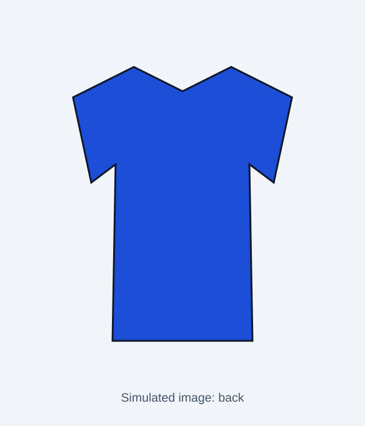

SIMULATED storefront for testing. Fictional brand, invented products and reviews.


Oxford Button-Down Shirt
$64.00
A classic button-down in washed cotton oxford with a chest pocket.
Details
- Regular fit
- Sanforized: pre-shrunk
- Button-down collar, chest pocket
Fabric: 100% cotton oxford
Size guide: garment measurements
Measurements of the garment laid flat, full circumference, in cm.
| Size | Chest (cm) | Shoulder (cm) | Sleeve length (cm) | Length (cm) |
|---|---|---|---|---|
| S | 108 | 44 | 60 | 72 |
| M | 114 | 46 | 61.5 | 74 |
| L | 120 | 48 | 63 | 76 |
| XL | 126 | 50 | 64.5 | 78 |
Customer reviews (5)
Arjun ★★★★☆
Good shirt but it runs small at the chest, I needed a size up.
Mohan ★★★★☆
Chest felt tight through the arms, sized up and it is fine.
Leo ★★★★★
Pre-shrunk really means it: washed it three times and nothing changed.
Priya ★★★★☆
Sleeves are a bit long for me, I had them shortened.
Ben ★★★☆☆
The fabric is a little see-through in the white.